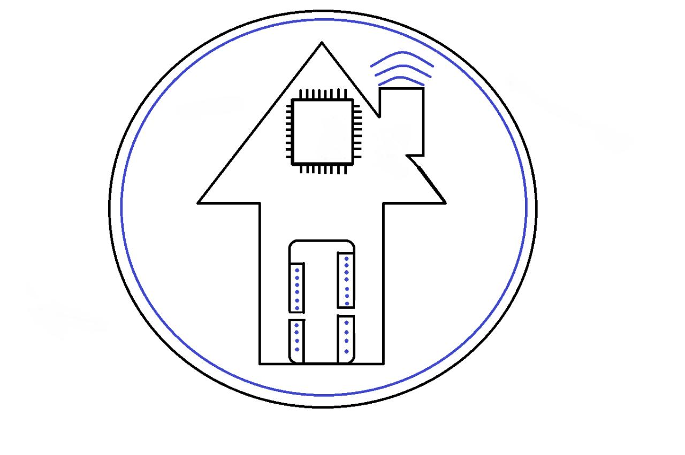

DOMOTIC 
La necesidad de calefaccionarnos es propia de la especie humana. El fuego y los sistemas para generar combustión han sido por siglos los metodos que se utilizan en los hogares para lograrlo. En la actualidad se han incorporado otros medios apartir de la llegada de la electricidad.
Sin embargo la calefacción a leña o por combustión del gas se sigue utilizando. En nuestra zona de traslasierra, el uso de calefacción a gas o salamandra a leña, es sumamente impresindible, al igual que garrafas con pantallas o braseros; este complejo recurso que encontramos en nuestros hogares pueden llegar a ser muy perjudiciales y riesgosos para nuestra salud y la de nuestras mascotas.
¿Qué es DOMOTIC?
Domotic surge como proyecto escolar de la escuela PROA (Escuela Experimental con Énfasis en TIC Sede San Pedro) de Córdoba, traslasierra, consiste en la elaboración de un sistema de detección de gases (butano, propano, metano) y de monóxido de carbono, a fin de controlar la seguridad y calidad del aire que respiramos en nuestros hogares y ambientes que habitamos.
DOMOTIC consta de una placa arduino (Arduino es una plataforma de hardware libre, basada en una placa con un micro controlador y un entorno de desarrollo (software), diseñada para facilitar el uso de la electrónica en proyectos multidisciplinares), también incorpora actuadores como LEDs y BUZZER, cables conectores y su respectivo Software.